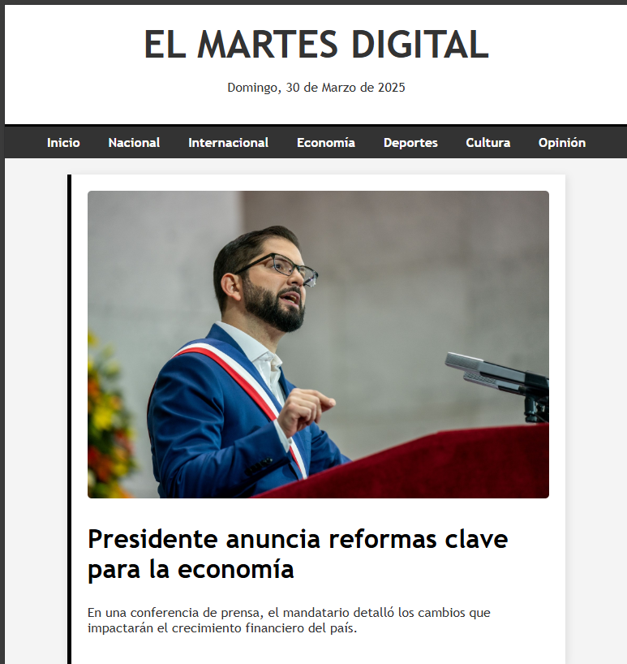

Periódico Digital
Diseño y desarrollo de un periódico digital responsive, optimizado para SEO, con funcionalidades modernas como búsqueda y filtrado de artículos.
Ver más detallesSoy Nicolás Huenchual Moreno, Técnico Profesional en Informática, apasionado por el diseño de interfaces atractivas, accesibles y funcionales.
Ver mis proyectos
Me esfuerzo por crecer constantemente como diseñador de interfaces y desarrollador web. Disfruto colaborar con personas y trabajar en equipo para lograr soluciones creativas y funcionales.
Diseño y desarrollo de un periódico digital responsive, optimizado para SEO, con funcionalidades modernas como búsqueda y filtrado de artículos.
Ver más detalles
Aplicación web para gestionar reservas en línea, con diseño intuitivo en tiempo real.
Ver más detalles